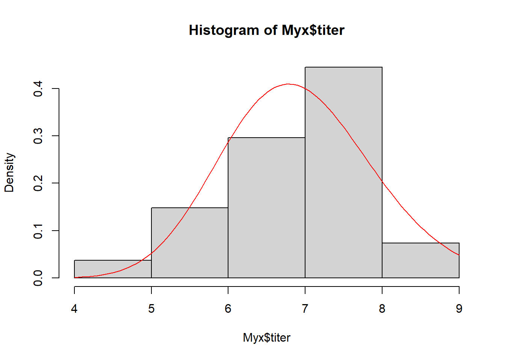

Optimization!
NRES 746
September 27, 2016
We can’t maximize a likelihood function without an optimization algorithm.
We can’t optimize a sampling or monitoring regime, as in the power analysis problem, without an optimization algorithm.
Clearly, we need optimization algorithms!! In addition, they provide an excellent example of how computers (often via brute force algorithms) have superseded pure mathematics for performing statistical analysis.
You may not have built your own optimization algorithm before, but you have probably taken advantage of optimization algorithms. For example, if you have performed a glm or a non-linear regression in R, you have exploited numerical optimization algorithms!
We will discuss optimization in the context of maximum likelihood estimation. Let’s start with the most simple of all optimization algorithms:
Brute Force
Just like we did for the two-dimensional likelihood surface, we could evaluate the likelihood at tiny intervals across a broad range of parameter values. Then we can just identify the parameter set that produces the maximum likelihood across all evaluated parameter sets.
Positives
- Simple!! (Conceptually very straightforward)
- Identify false peaks!
- Undeterred by discontinuities in the likelihood surface
Negatives
- Speed: even slower and less efficient than a typical ecologist is willing to accept!
- Resolution: we may specify the wrong interval size. Even so, we can only get the answer to within plus or minus the interval size.
Example dataset: Myxomatosis titer in rabbits
Let’s use Bolker’s myxomatosis example dataset to illustrate our optimization issues:
library(emdbook)
MyxDat <- MyxoTiter_sum
Myx <- subset(MyxDat,grade==1)
head(Myx)## grade day titer
## 1 1 2 5.207
## 2 1 2 5.734
## 3 1 2 6.613
## 4 1 3 5.997
## 5 1 3 6.612
## 6 1 3 6.810For this example, we are modeling the distribution of measured titers (virus loads) for Australian rabbits. Bolker chose to use a Gamma distribution. Here is the empirical distribution:
hist(Myx$titer,freq=FALSE)We need to estimate the gamma rate and shape parameters that best fit this empirical distribution. Here is one example of a Gamma fit to this distribution:
hist(Myx$titer,freq=FALSE)
curve(dgamma(x,shape=40,scale=0.15),add=T,col="red")
Let’s build a likelihood function for this problem!
GammaLikelihoodFunction <- function(params){
sum(dgamma(Myx$titer,shape=params['shape'],scale=params['scale'],log=T))
}
params <- c(40,0.15)
names(params) <- c("shape","scale")
params## shape scale
## 40.00 0.15GammaLikelihoodFunction(params)## [1] -49.58983Now let’s optimize using ‘optim’ like we did before, to find the MLE!
ctrl <- list(fnscale=-1) # maximize rather than minimize!!
MLE <- optim(fn=GammaLikelihoodFunction,par=params,control=ctrl,method="BFGS")## Warning in dgamma(Myx$titer, shape = params["shape"], scale =
## params["scale"], : NaNs produced
## Warning in dgamma(Myx$titer, shape = params["shape"], scale =
## params["scale"], : NaNs produced
## Warning in dgamma(Myx$titer, shape = params["shape"], scale =
## params["scale"], : NaNs produced
## Warning in dgamma(Myx$titer, shape = params["shape"], scale =
## params["scale"], : NaNs produced
## Warning in dgamma(Myx$titer, shape = params["shape"], scale =
## params["scale"], : NaNs produced
## Warning in dgamma(Myx$titer, shape = params["shape"], scale =
## params["scale"], : NaNs produced
## Warning in dgamma(Myx$titer, shape = params["shape"], scale =
## params["scale"], : NaNs produced
## Warning in dgamma(Myx$titer, shape = params["shape"], scale =
## params["scale"], : NaNs produced
## Warning in dgamma(Myx$titer, shape = params["shape"], scale =
## params["scale"], : NaNs produced
## Warning in dgamma(Myx$titer, shape = params["shape"], scale =
## params["scale"], : NaNs produced
## Warning in dgamma(Myx$titer, shape = params["shape"], scale =
## params["scale"], : NaNs produced
## Warning in dgamma(Myx$titer, shape = params["shape"], scale =
## params["scale"], : NaNs produced
## Warning in dgamma(Myx$titer, shape = params["shape"], scale =
## params["scale"], : NaNs produced
## Warning in dgamma(Myx$titer, shape = params["shape"], scale =
## params["scale"], : NaNs produced
## Warning in dgamma(Myx$titer, shape = params["shape"], scale =
## params["scale"], : NaNs produced
## Warning in dgamma(Myx$titer, shape = params["shape"], scale =
## params["scale"], : NaNs produced
## Warning in dgamma(Myx$titer, shape = params["shape"], scale =
## params["scale"], : NaNs produced
## Warning in dgamma(Myx$titer, shape = params["shape"], scale =
## params["scale"], : NaNs produced
## Warning in dgamma(Myx$titer, shape = params["shape"], scale =
## params["scale"], : NaNs produced
## Warning in dgamma(Myx$titer, shape = params["shape"], scale =
## params["scale"], : NaNs produced
## Warning in dgamma(Myx$titer, shape = params["shape"], scale =
## params["scale"], : NaNs produced
## Warning in dgamma(Myx$titer, shape = params["shape"], scale =
## params["scale"], : NaNs produced
## Warning in dgamma(Myx$titer, shape = params["shape"], scale =
## params["scale"], : NaNs produced
## Warning in dgamma(Myx$titer, shape = params["shape"], scale =
## params["scale"], : NaNs produced
## Warning in dgamma(Myx$titer, shape = params["shape"], scale =
## params["scale"], : NaNs produced
## Warning in dgamma(Myx$titer, shape = params["shape"], scale =
## params["scale"], : NaNs produced
## Warning in dgamma(Myx$titer, shape = params["shape"], scale =
## params["scale"], : NaNs producedMLE$par## shape scale
## 49.3666607 0.1402629Let’s visualize the fit of the MLE in this case…
hist(Myx$titer,freq=FALSE)
curve(dgamma(x,shape=MLE$par["shape"],scale=MLE$par["scale"]),add=T,col="red")
Okay, now what if we want to try optimizing with the brute force method…
##############
# define 2-D parameter space!
##############
shapevec <- seq(10,100,by=0.1)
scalevec <- seq(0.01,0.3,by=0.001)
##############
# define the likelihood surface across this grid within parameter space
##############
surface2D <- matrix(nrow=length(shapevec),ncol=length(scalevec)) # initialize storage variable
newparams <- params
for(i in 1:length(shapevec)){
newparams['shape'] <- shapevec[i]
for(j in 1:length(scalevec)){
newparams['scale'] <- scalevec[j]
surface2D[i,j] <- GammaLikelihoodFunction(newparams)
}
}
############
# Visualize the likelihood surface
############
image(x=shapevec,y=scalevec,z=surface2D,zlim=c(-1000,-30),col=topo.colors(12))
contour(x=shapevec,y=scalevec,z=surface2D,levels=c(-30,-40,-80,-500),add=T)
Now what is the maximum likelihood estimate?
ndx <- which(surface==max(surface),arr.ind=T)
shapevec[ndx[,1]]## [1] 49.8scalevec[ndx[,2]]## [1] 0.139Derivative based methods!
If we assume that the likelihood surface is smooth and has only one minimum, we can develop very efficient optimization algorithms. In general, derivative based methods look for the point in parameter space where the derivative of the likelihood function is zero. That is, the peak!
Let’s imagine we are interested in determining the shape parameter, given a known scale parameter. To use derivative based methods, let’s first build a function that estimates the slope of the function at any arbtrary point in parameter space:
params <- MLE$par
SlopeFunc <- function(shape_guess,tiny=0.001){
params['shape'] <- shape_guess
high <- GammaLikelihoodFunction(params+c(tiny,0))
low <- GammaLikelihoodFunction(params-c(tiny,0))
slope <- (high-low)/(tiny*2)
return(slope)
}
SlopeFunc(shape_guess=30)## [1] 13.62666Now let’s visualize this!
shapevec <- seq(10,100,by=0.1)
##############
# define the likelihood surface
##############
surface1D <- numeric(length(shapevec)) # initialize storage variable
newparams <- params
for(i in 1:length(shapevec)){
newparams['shape'] <- shapevec[i]
surface1D[i] <- GammaLikelihoodFunction(newparams)
}
plot(surface1D~shapevec,type="l")
point <- GammaLikelihoodFunction(c(shape=30,MLE$par['scale']))
slope <- SlopeFunc(shape_guess=30)
lines(c(20,40),c(point-slope*10,point+slope*10),col="red")
We also need a function to compute the second derivative, or the curvature…
params <- MLE$par
CurvatureFunc <- function(shape_guess,tiny=0.001){
params['shape'] <- shape_guess
high <- SlopeFunc(shape_guess+tiny)
low <- SlopeFunc(shape_guess-tiny)
curvature <- (high-low)/(tiny*2)
return(curvature)
}
CurvatureFunc(shape_guess=30)## [1] -0.9151666Okay, now we can implement a derivative-based optimization algorithm!
Essentially, we are trying to find the point where the derivative of the likelihood function is zero (the root of the function!).
The simplest derivative based optimization algorithm is the Newton-Raphson algorithm. Here is the pseudocode:
- pick a guess for a parameter value
- compute the derivative of the likelihood function for that guess
- compute the slope of the derivative (curvature) of the likelihood function for that guess
- Extrapolate linearly to try to find the root (where the derivative of the likelihood function should be zero if the slope of the likelihood function were linear)
- repeat until the derivative of the likelihood function is close enough to zero (within a specified tolerance)
Let’s first visualize the shape of the first derivative of the likelihood function
firstderiv <- numeric(length(shapevec)) # initialize storage variable
for(i in 1:length(shapevec)){
firstderiv[i] <- SlopeFunc(shapevec[i])
}
plot(firstderiv~shapevec,type="l")
abline(h=0,col="red")
Let’s use the Newton method to find the root. First we pick a starting value. Say we pick 80.
First compute the derivatives:
firstderiv <- SlopeFunc(80)
secondderiv <- CurvatureFunc(80)
firstderiv## [1] -13.13913secondderiv## [1] -0.3396182Now let’s use this linear function to extrapolate to where the first derivative is equal to zero:
oldguess <- 80
newguess <- oldguess - firstderiv/secondderiv
newguess## [1] 41.31206Our new guess is that the shape parameter is 41.31. Let’s do it again!
oldguess <- 41.31
newguess <- oldguess - SlopeFunc(oldguess)/CurvatureFunc(oldguess)
newguess## [1] 48.66339Okay, we’re already getting close to our MLE of around 49.36. Let’s do it again:
oldguess<-newguess
newguess <- oldguess - SlopeFunc(oldguess)/CurvatureFunc(oldguess)
newguess## [1] 49.36237And again!
oldguess<-newguess
newguess <- oldguess - SlopeFunc(oldguess)/CurvatureFunc(oldguess)
newguess## [1] 49.36746And again!!!
oldguess<-newguess
newguess <- oldguess - SlopeFunc(oldguess)/CurvatureFunc(oldguess)
newguess## [1] 49.36746Wow, in just a few steps we already basically found the root. Let’s find the root for real, using an algorithm…
NewtonMethod <- function(firstguess,tolerance=0.0000001){
deriv <- SlopeFunc(firstguess)
oldguess <- firstguess
counter <- 0
while(abs(deriv)>tolerance){
deriv <- SlopeFunc(oldguess)
newguess <- oldguess - deriv/CurvatureFunc(oldguess)
oldguess<-newguess
counter=counter+1
}
mle <- list()
mle$estimate <- newguess
mle$likelihood <- GammaLikelihoodFunction(c(shape=newguess,MLE$par['scale']))
mle$iterations <- counter
return(mle)
}
newMLE <- NewtonMethod(firstguess=80)
newMLE## $estimate
## [1] 49.36746
##
## $likelihood
## [1] -37.6673
##
## $iterations
## [1] 6Hopefully this illustrates the power of optimization algorithms!!
Note that this method and other derivative-based methods can work in multiple dimensions:
Derivative-free optimization methods
Derivative-free methods make no assumption about smoothness. In some ways, they represent a middle ground between the brute force method and the elegant but finnicky derivative-based methods, representing a balance between simplicity and generality.
Derivative-free method 1: simplex method
This is the default opimization method for “optim”! That means that R used this method for optimizing the fuel economy example from the likelihood lecture.
Definition: Simplex
A simplex is the multi-dimensional analog of the triangle. In two dimensions, the triangle is the simplest shape possible. It has one more vertex than there are dimensions! In n dimensions, a simplex is defined by n+1 vertices.
Pseudocode for Nelder-Mead simplex algorithm
Set up an initial simplex in parameter space (often based on a user’s initial guess).
Continue the following steps until your answer is good enough:
- Start by identifying the worst vertex (the one with the lowest likelihood)
- Take the worst vertex and reflect it across the shape represented by the other vertices.
- If the likelihood is higher for the reflected point, double the length of the jump!
- If this jump was bad (lower likelihood) then try a point that’s only half as far out as the initial try.
- If this jump was also bad, then contract the simplex around the current highest-likelihood vertex.
Q: What does the simplex look like for a one-dimensional optimization problem?
Q: Is this method likely to be good at avoiding false peaks in the likelihood surface?
Example: Simplex method
Step 1: Set up an initial simplex in parameter space
firstguess <- c(shape=40,scale=0.25) # "user" first guess # shape=80,scale=0.212
simplex <- list()
# set up the initial simplex based on the first guess...
simplex[['vertex1']] <- firstguess + c(5,0.05)
simplex[['vertex2']] <- firstguess + c(-5,-0.05)
simplex[['vertex3']] <- firstguess + c(5,-0.05)
simplex## $vertex1
## shape scale
## 45.0 0.3
##
## $vertex2
## shape scale
## 35.0 0.2
##
## $vertex3
## shape scale
## 45.0 0.2Let’s plot the simplex…
## first let's make a function to plot the simplex on a 2-D likelihood surface...
addSimplex <- function(simplex,col="red"){
temp <- as.data.frame(simplex) # easier to work with data frame here
points(x=temp[1,c(1,2,3,1)], y=temp[2,c(1,2,3,1)],type="b",lwd=2,col=col)
}
image(x=shapevec,y=scalevec,z=surface2D,zlim=c(-1000,-30),col=topo.colors(12))
contour(x=shapevec,y=scalevec,z=surface2D,levels=c(-30,-40,-80,-500),add=T)
addSimplex(simplex)
Now let’s evaluate the log likelihood at each vertex
SimplexLik <- function(simplex){
newvec <- unlist(lapply(simplex,GammaLikelihoodFunction)) # note use of apply instead of for loop...
return(newvec)
}
SimplexLik(simplex)## vertex1 vertex2 vertex3
## -257.13414 -38.46251 -76.07737Now let’s develop a function to implement our first move through parameter space, according to the rules defined above…
#####
# Helper Functions
#####
## this function relects the worst vertex across the remaining vector
ReflectIt <- function(oldsimplex,WorstVertex){
## re-arrange simplex- worst must be first
worstndx <- which(names(oldsimplex)==WorstVertex)
otherndx <- c(1:3)[-worstndx]
newndx <- c(worstndx,otherndx)
## translate so that vertex 2 is the origin (0,0)
translate <- oldsimplex[[newndx[2]]]
newsimplex <- list(oldsimplex[[1]]-translate,oldsimplex[[2]]-translate,oldsimplex[[3]]-translate)
## use vector reflection (reflect vertex 1 over a vector containing the origin and vertex 3) to find the reflection across a vector that includes the origin
vdotl <- sum(newsimplex[[newndx[1]]]*newsimplex[[newndx[3]]])
ldotl <- sum(newsimplex[[newndx[3]]]*newsimplex[[newndx[3]]])
projection <- (vdotl/ldotl)*newsimplex[[newndx[3]]]
reflected <- 2*projection-newsimplex[[newndx[1]]]
## translate back to the likelihood surface
newsimplex[[newndx[1]]] <- reflected
newsimplex <- list(newsimplex[[1]]+translate,newsimplex[[2]]+translate,newsimplex[[3]]+translate)
## return the new simplex
names(newsimplex) <- names(oldsimplex)
## generate some alternative jumps (or "oozes"!)...
oldpoint <- oldsimplex[[worstndx]]
newpoint <- newsimplex[[worstndx]]
newpoint2 <- newpoint-oldpoint
double <- newpoint2 * 2
half <- newpoint2 * 0.25
alternates <- list()
alternates$reflected <- newsimplex
alternates$double <- newsimplex
alternates$half <- newsimplex
alternates$double[[worstndx]] <- double + oldpoint
alternates$half[[worstndx]] <- half + oldpoint
return(alternates)
}
ShrinkIt <- function(oldsimplex,BestVertex){
newsimplex <- oldsimplex
## indices...
bestndx <- which(names(oldsimplex)==BestVertex)
otherndx <- c(1:3)[-bestndx]
translate <- oldsimplex[[bestndx]]
i=2
for(i in otherndx){
newvector <- oldsimplex[[i]]-translate
shrinkvector <- newvector * 0.5
newsimplex[[i]] <- shrinkvector + translate
}
return(newsimplex)
}
MoveTheSimplex <- function(oldsimplex){ # incomplete nelder-mead
newsimplex <- oldsimplex #
# Start by identifying the *worst* vertex (the one with the lowest likelihood)
VertexLik <- SimplexLik(newsimplex)
WorstLik <- min(VertexLik)
WorstVertex <- names(VertexLik[which.min(VertexLik)]) # identify vertex with lowest likelihood
candidates <- ReflectIt(oldsimplex=newsimplex,WorstVertex) # reflect across the remaining edge
CandidateLik <- sapply(candidates,SimplexLik) # re-evaluate likelihood at the vertices...
CandidateLik <- apply(CandidateLik,c(1,2), function(t) ifelse(is.nan(t),-99999,t))
bestCandidate <- names(which.max(CandidateLik[WorstVertex,]))
bestCandidateLik <- CandidateLik[WorstVertex,bestCandidate]
if(bestCandidateLik>=WorstLik){
newsimplex <- candidates[[bestCandidate]]
} else{
BestVertex <- names(VertexLik[which.max(VertexLik)])
newsimplex <- ShrinkIt(oldsimplex,BestVertex)
}
return(newsimplex)
}
oldsimplex <- simplex
newsimplex <- MoveTheSimplex(oldsimplex)## Warning in dgamma(Myx$titer, shape = params["shape"], scale =
## params["scale"], : NaNs producedimage(x=shapevec,y=scalevec,z=surface2D,zlim=c(-1000,-30),col=topo.colors(12))
contour(x=shapevec,y=scalevec,z=surface2D,levels=c(-30,-40,-80,-500),add=T)
addSimplex(oldsimplex,col="green")
addSimplex(newsimplex)
Let’s try another few moves
oldsimplex <- newsimplex
newsimplex <- MoveTheSimplex(oldsimplex)
image(x=shapevec,y=scalevec,z=surface2D,zlim=c(-1000,-30),col=topo.colors(12))
contour(x=shapevec,y=scalevec,z=surface2D,levels=c(-30,-40,-80,-500),add=T)
addSimplex(oldsimplex,col="green")
addSimplex(newsimplex)And again!
oldsimplex <- newsimplex
newsimplex <- MoveTheSimplex(oldsimplex)
image(x=shapevec,y=scalevec,z=surface2D,zlim=c(-1000,-30),col=topo.colors(12))
contour(x=shapevec,y=scalevec,z=surface2D,levels=c(-30,-40,-80,-500),add=T)
addSimplex(oldsimplex,col="green")
addSimplex(newsimplex)Again:
oldsimplex <- newsimplex
newsimplex <- MoveTheSimplex(oldsimplex)
image(x=shapevec,y=scalevec,z=surface2D,zlim=c(-1000,-30),col=topo.colors(12))
contour(x=shapevec,y=scalevec,z=surface2D,levels=c(-30,-40,-80,-500),add=T)
addSimplex(oldsimplex,col="green")
addSimplex(newsimplex)And another few times:
par(mfrow=c(2,2))
for(i in 1:4){
oldsimplex <- newsimplex
newsimplex <- MoveTheSimplex(oldsimplex)
image(x=shapevec,y=scalevec,z=surface2D,zlim=c(-1000,-30),col=topo.colors(12))
contour(x=shapevec,y=scalevec,z=surface2D,levels=c(-30,-40,-80,-500),add=T)
addSimplex(oldsimplex,col="green")
addSimplex(newsimplex)
}Now we can build a function and use the algorithm for optimizing!
SimplexMethod <- function(firstguess,tolerance=0.000001){
initsimplex <- list()
initsimplex[['vertex1']] <- firstguess + c(5,0.05)
initsimplex[['vertex2']] <- firstguess + c(-5,-0.05)
initsimplex[['vertex3']] <- firstguess + c(5,-0.05)
VertexLik <- SimplexLik(initsimplex)
oldbestlik <- VertexLik[which.max(VertexLik)]
deltalik <- 100
counter <- 0
while(counter<100){
newsimplex <- MoveTheSimplex(oldsimplex)
VertexLik <- SimplexLik(newsimplex)
bestlik <- VertexLik[which.max(VertexLik)]
deltalik <- bestlik-oldbestlik
oldsimplex <- newsimplex
oldbestlik <- bestlik
counter <- counter+1
}
mle <- list()
mle$estimate <- newsimplex[[1]]
mle$likelihood <- bestlik
mle$iterations <- counter
return(mle)
}
SimplexMethod(firstguess = c(shape=39,scale=0.28))## $estimate
## shape scale
## 44.9998845 0.1538688
##
## $likelihood
## vertex2
## -37.72978
##
## $iterations
## [1] 100Okay, it doesn’t seem to be optimizing very well. I probably didn’t implement it perfectly yet!
Can you see why this method is sometimes called the “amoeba” method of optimization??
In general, the simplex-based methods are very good at finding the general area of the MLE, but generally less efficient than the derivative-based methods- especially as you near the MLE.
Derivative-free method 2: simulated annealing (SE).
Simulated annealing is one of my favorite optimization techniques. I think it serves as a good metaphor for problem-solving in general. When solving a problem, the first step is to think big, try to imagine whether we might be missing possible solutions. Then we settle (focus) on a general solution, learn more about how that solution applies to our problem, and ultimately get it done!
The temperature analogy is fun too! We start out “hot”- unfocused, frenzied, bouncing around - and we end up cold - crystal clear and focused!
SE: A “global” optimization solution
Simulated annealing is called a “global” optimization solution because it can deal with false peaks and other strangenesses that can arise in optimization problems (e.g., maximizing likelihood. )
Pseudocode for the Metropolis simulated annealing routine
Pick an initial starting point and evaluate the likelihood.
Continue the following steps until your answer is good enough:
- Pick a new point at random near your old point and compute the (log) likelihood
- If the new value is better, accept it and start again
- If the new value is worse, then
- Pick a random number between zero and 1
- Accept the new (worse) value anyway if the random number is less than exp(change in log likelihood/k). Otherwise, go back to the previous value
- Periodically (e.g. every 100 iterations) lower the value of k to make it harder to accept bad moves!
A variant of simulated annealing is available in the “optim” function in R (method = “SANN”)
Example: Simulated annealing!
Let’s use the same familiar myxomatosis example!
startingvals <- c(shape=80,scale=0.15)
startinglik <- GammaLikelihoodFunction(startingvals)
startinglik## [1] -313.6188k = 100 # set the "temperature"
# function for making new guesses
newGuess <- function(oldguess=startingvals){
maxshapejump <- 5
maxscalejump <- 0.05
jump <- c(runif(1,-maxshapejump,maxshapejump),runif(1,-maxscalejump,maxscalejump))
newguess <- oldguess + jump
return(newguess)
}
# set a new "guess" near to the original guess
newGuess(oldguess=startingvals) # each time is different- this is the first optimization procedure with randomness built in## shape scale
## 76.2892637 0.1624681newGuess(oldguess=startingvals)## shape scale
## 82.5216222 0.1722611newGuess(oldguess=startingvals)## shape scale
## 84.2982093 0.1320043Now let’s evaluate the difference in likelihood between the old and the new guess…
LikDif <- function(oldguess,newguess){
oldLik <- GammaLikelihoodFunction(oldguess)
newLik <- GammaLikelihoodFunction(newguess)
return(newLik-oldLik)
}
newguess <- newGuess(oldguess=startingvals)
loglikdif <- LikDif(oldguess=startingvals,newguess)
loglikdif## [1] -259.894Now let’s look at the Metropolis routine:
k <- 100
oldguess <- startingvals
counter <- 0
guesses <- matrix(0,nrow=100,ncol=2)
colnames(guesses) <- names(startingvals)
while(counter<100){
newguess <- newGuess(oldguess)
loglikdif <- LikDif(oldguess,newguess)
if(loglikdif>0){
oldguess <- newguess
}else{
rand=runif(1)
if(rand <= exp(loglikdif/k)){
oldguess <- newguess # accept even if worse!
}
}
counter <- counter + 1
guesses[counter,] <- oldguess
}
# visualize!
image(x=shapevec,y=scalevec,z=surface2D,zlim=c(-1000,-30),col=topo.colors(12))
contour(x=shapevec,y=scalevec,z=surface2D,levels=c(-30,-40,-80,-500),add=T)
lines(guesses,col="red")
Clearly this is the most inefficient, brute-force method we have seen so far. And also quite clearly, in the context of this class, the best and most fun (and dangerous!)
Let’s run it for longer, and with a smaller value of k..
k <- 10
oldguess <- startingvals
counter <- 0
guesses <- matrix(0,nrow=1000,ncol=2)
colnames(guesses) <- names(startingvals)
while(counter<1000){
newguess <- newGuess(oldguess)
loglikdif <- LikDif(oldguess,newguess)
if(loglikdif>0){
oldguess <- newguess
}else{
rand=runif(1)
if(rand <= exp(loglikdif/k)){
oldguess <- newguess # accept even if worse!
}
}
counter <- counter + 1
guesses[counter,] <- oldguess
}
# visualize!
image(x=shapevec,y=scalevec,z=surface2D,zlim=c(-1000,-30),col=topo.colors(12))
contour(x=shapevec,y=scalevec,z=surface2D,levels=c(-30,-40,-80,-500),add=T)
lines(guesses,col="red")
This looks better! The search algorithm is finding the high-likelihood parts of parameter space pretty well!
Now let’s “cool” the temperature over time, let the algorithm settle down on a likelihood peak
k <- 100
oldguess <- startingvals
counter <- 0
guesses <- matrix(0,nrow=10000,ncol=2)
colnames(guesses) <- names(startingvals)
MLE <- list(vals=startingvals,lik=GammaLikelihoodFunction(startingvals),step=0)
while(counter<10000){
newguess <- newGuess(oldguess)
loglikdif <- LikDif(oldguess,newguess)
if(loglikdif>0){
oldguess <- newguess
}else{
rand=runif(1)
if(rand <= exp(loglikdif/k)){
oldguess <- newguess # accept even if worse!
}
}
counter <- counter + 1
if(counter%%100==0) k <- k*0.8
guesses[counter,] <- oldguess
thislik <- GammaLikelihoodFunction(oldguess)
if(thislik>MLE$lik) MLE <- list(vals=oldguess,lik=GammaLikelihoodFunction(oldguess),step=counter)
}
# visualize!
image(x=shapevec,y=scalevec,z=surface2D,zlim=c(-1000,-30),col=topo.colors(12))
contour(x=shapevec,y=scalevec,z=surface2D,levels=c(-30,-40,-80,-500),add=T)
lines(guesses,col="red")
points(MLE$vals[1],MLE$vals[2],col="green",pch=20,cex=3)MLE## $vals
## shape scale
## 49.8639468 0.1389069
##
## $lik
## [1] -37.66739
##
## $step
## [1] 5619As you can see, the simulated annealing method did pretty well. However, we needed thousands of iterations to do what other methods just take a few iterations to do. But, we might feel better that we have explored parameter space more thoroughly and avoided the potential problem of false peaks.
Other methods
As you can see, there are many ways to optimize- and the optimal optimization routine is not always obvious!
You can probably use some creative thinking and imagine your own optimization algorithm… For example, some have suggested combining the simplex method with the simulated annealing method! Opimization is an art!!
What about the confidence interval??
As you can see in the previous examples, most of the optimization techniques we have looked at do not explore parameter space enough to discern the shape of the likelihood surface around the maximum likelihood estimate. Therefore, we do not have the information we need to compute the confidence intervals around our parameter estimates. And what good is a point estimate without a corresponding estimate of uncertainty??
There are several techniques that are widely used to estimate and describe parameter uncertainty:
- Brute force (expose the entire likelihood surface!)
- Profile likelihood (the best way!)
- Evaluate curvature at the MLE and use that to estimate error (very crude- but the default for many MLE routines!)